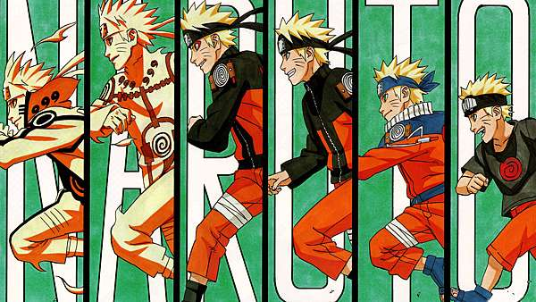

<div class="carousel">
    <div class="container">
        <a href="https://3yya.com/" target="_blank"
            ></a>
        <a href="https://3yya.com/courseware" target="_blank"
            ></a>
        <a href="https://3yya.com/course/2" target="_blank"
            ></a>
    </div>
    <div class="shift">
        <div class="btn left" onclick="leftShift()">&lt;</div>
        <div class="btn right" onclick="rightShift()">&gt;</div>
    </div>
    <div class="bottom"></div>
</div>

<style>
    .carousel {
        width: 1000px;
        height: 500px;

        border-radius: 16px;

        overflow: hidden;

        position: relative;
    }

    .carousel .container {
        width: 100%;
        height: 100%;

        position: relative;
        left: 0;

        display: flex;

        /* 过渡动画 1s */
        transition: all 1s;
    }

    .carousel .container a {
        width: 100%;
        height: 100%;

        flex-shrink: 0;
    }

    .carousel .container a img {
        width: 100%;
        height: 100%;

        object-fit: cover;
    }

    .carousel .shift .btn {
        /* 绝对定位且垂直居中 */
        position: absolute;
        top: 0;
        bottom: 0;
        margin: auto 0;

        background-color: teal;
        color: white;

        width: 50px;
        height: 50px;
        border-radius: 8px;

        font-size: 40px;
        font-weight: bold;

        /* 字符水平垂直居中 */
        line-height: 50px;
        text-align: center;

        cursor: pointer;

        user-select: none;

        /* 不透明度 0.5 */
        opacity: 0.5;
    }
    .carousel .shift .left {
        left: 20px;
    }
    .carousel .shift .right {
        right: 20px;
    }

    .carousel .bottom {
        position: absolute;

        bottom: 20px;

        /* 绝对定位水平居中 */
        left: 0;
        right: 0;
        margin: 0 auto;

        /* 宽度等同于内容宽度 */
        /* 知识点：https://3yya.com/courseware/chapter/79#关键字属性 */
        width: max-content;

        display: flex;
        /* 指示器间距 */
        gap: 10px;
    }

    .carousel .bottom .indicator {
        height: 5px;
        width: 40px;

        background-color: teal;

        opacity: 0.5;
        cursor: pointer;
    }

    .carousel:hover .bottom .indicator {
        opacity: 1;
    }
    .carousel:hover .shift .btn {
        opacity: 1;
    }
</style>
<script>
    // 显示的图片下标
    let index = 0

    // 图片的数量
    let imageCount = document.querySelectorAll(
        ".carousel .container img"
    ).length

    const bottom = document.querySelector(".carousel .bottom")
    for (let i = 0; i < imageCount; i++) {
        // DOM 操作
        // 知识点：https://3yya.com/courseware/chapter/162

        // 创建底部按钮
        const indicator = document.createElement("div")
        indicator.classList.add("indicator")
        indicator.onclick = () => setIndex(i)

        bottom.append(indicator)
    }

    function createAuto() {
        return setInterval(() => {
            index++
            refresh()
        }, 3000)
    }

    // 自动滚动
    let autoTimer = createAuto()

    function refresh() {
        if (index < 0) {
            // 下标小于 0 时
            // 设置最右的图片
            index = imageCount - 1
        } else if (index >= imageCount) {
            // 下标超过上限时
            // 设置最左的图片
            index = 0
        }

        // 获取轮播框元素
        let carousel = document.querySelector(".carousel")

        //获取轮播框的宽度
        let width = getComputedStyle(carousel).width
        width = Number(width.slice(0, -2))

        carousel.querySelector(".container").style.left =
            index * width * -1 + "px"
    }

    let refreshWrapper = (func) => {
        // refresh 装饰器
        return function (...args) {
            let result = func(...args)
            refresh()

            // 重置自动滚动
            clearInterval(autoTimer)
            autoTimer = createAuto()
            return result
        }
    }

    let leftShift = refreshWrapper(() => {
        index--
    })
    let rightShift = refreshWrapper(() => {
        index++
    })

    let setIndex = refreshWrapper((idx) => {
        index = idx
    })

    refresh()
</script>
